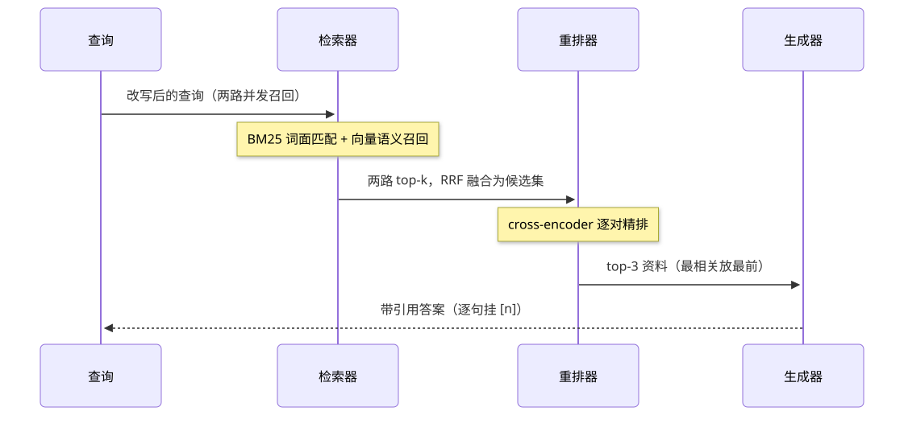

第14章 知识检索 Retrieval-Augmented Generation (RAG)
把模型答不了的知识外置成可检索的资料库，用分块、混合检索、重排与引用生成，让回答有据可查、可即时更新、可溯源。
一句话定义：RAG 在生成之前先从外部知识库检索相关资料，把资料与问题一起交给模型，让回答基于可更新的外部知识而非冻结的参数记忆。 解决什么问题：模型知识有截止日期、不含私有知识、编造时无法溯源 ｜ 适用场景：企业知识库问答、文档助手、客服坐席辅助、任何"答案在文档里"的任务 ｜ 核心机制：分块索引 + 混合检索 + 融合重排 + 带引用生成 ｜ 代价：检索质量决定回答上限、索引维护成本、多一跳延迟、检索与生成两个环节都可能出错。
14.1 模式概述
14.1.1 问题背景：为什么需要这个模式
参数化记忆有三个结构性缺陷。知识冻结：训练完成后模型的世界停在数据截止日，新政策、新产品、新价格它一概不知。私有知识缺失：你公司的报销制度、产品的内部错误码表从没进过任何公开语料，模型只能编。不可溯源：模型答对了也说不清依据是什么——参数里的知识没有引用格式，这对需要出处的场景（法务、医疗、金融合规）是硬伤。三条缺陷指向同一个方向：把"知识"从模型参数里搬出来，放到一个可以随时增删改查的外部存储里，生成时按需取用。这就是 RAG：检索（Retrieval）负责找，增强（Augmented）负责拼，生成（Generation）负责答。知识更新从"重新训练"变成"更新索引"，回答从"我记得"变成"资料第 3 条说"。
值得强调的是，RAG 改变的不仅是能力，更是成本结构。让模型学会一条新知识，微调要构造训练集、跑训练、做评估，周期以天计、成本以千美元计；往向量库里插入一份新文档，以秒计、成本趋近于零。对于"知识频繁变化、答案要求可溯源"的场景，RAG 几乎总是先于微调被考虑的那条路。
14.1.2 核心机制：它如何工作
一个可运行的 RAG 系统分两条流水线。离线索引：加载文档 → 分块（chunking，把长文档切成检索粒度合适的片段）→ 向量化（embedding 模型把每块变成稠密向量）→ 入库（向量库 + 原文与元数据）。在线检索-生成：收到查询后，先做查询预处理（改写、补全、路由），然后双路召回——稀疏检索（BM25 等词面匹配）与稠密检索（向量相似度）各取 top-k——用 RRF 之类的融合算法合并成候选集，再用更重但更准的重排器（reranker）精选 top-n，最后把选出的资料与问题拼进提示词，要求模型依据资料作答并标注引用。整个链条上分布着质量闸门：检索相关性有分数下限，低于阈值走拒答通道而不是硬答。
理解 RAG 的关键是看清两个检索阶段的分工：召回阶段追求"别漏"（高 recall），宁可多拿一些候选；重排阶段追求"排对"（高 precision），用更贵的模型把最相关的几条挑出来。这和传统搜索的多级排序架构一脉相承——先便宜地扩大候选池，再昂贵地精细排序。

14.1.3 与相邻模式的关系与组合
与工具使用的关系是特例与推广：检索本质上是"只读工具"中最常用的一类，完整 RAG 系统常常作为一组工具（搜索、取文档、翻页）暴露给会自主决策的 agent。与记忆模式的关系是外置知识记忆：记忆存的是交互历史与用户偏好，RAG 知识库存的是领域文档，两者常共用同一套向量检索基建。与提示链的关系是两段式流水线：检索段与生成段各是一次调用，中间的资料拼接是状态传递。与评估监控的关系尤其紧密：RAG 的错误可能是检索错也可能是生成错，必须分开度量（检索命中率、引用准确率、答案忠实度），RAGAS 这类评估框架因此成为标配。与多智能体的关系是角色化：在复杂研究任务里，"检索员"是一个专职角色，用 RAG 管道武装，向协调者交付带来源的要点清单。
14.2 源起：它从哪里来
RAG 的名字诞生于 2020 年 5 月：Facebook AI 的 Lewis 等人首次把“参数化记忆 + 非参数化检索”作为可端到端训练的组合命名。它的两个部件各有更长的前史：检索侧是信息检索半个世纪的积累（IDF、BM25、HNSW 图索引），生成侧是“让模型带着检索器”的尝试——2 月 REALM 把检索嵌进预训练目标，4 月 DPR 训出超越 BM25 的稠密检索器。此后 RAG 从训练组件退火成应用层管道，HyDE、RAGAS、Self-RAG、CRAG、GraphRAG 相继专门化各环节，谱系见 14.5.7。
| 年份月 | 事件 | 提出者/机构 | 出处 |
|---|---|---|---|
| 2020年2月 | REALM：检索嵌入预训练，知识库即参数外置 | Guu et al.（Google） | arXiv:2002.08909（ICML 2020） |
| 2020年4月 | DPR：对比学习训练稠密段落检索器 | Karpukhin et al.（Facebook AI） | arXiv:2004.04906（EMNLP 2020） |
| 2020年5月 | RAG 正式命名：参数化记忆+非参数化检索 | Lewis et al.（Facebook AI/UCL/NYU） | arXiv:2005.11401（NeurIPS 2020） |
| 2023年10月 | Self-RAG：模型自判何时检索、结果可不可用 | Asai et al. | arXiv:2310.11511（ICLR 2024） |
| 2024年1月 | CRAG：检索质量评估 + 纠错式回退 | Yan et al. | arXiv:2401.15884 |
14.3 发挥的作用：为什么重要
第一，知识的即时更新能力。业务知识以天为单位变化，RAG 把知识更新从训练周期解耦成索引操作——换一份文档，答案立刻跟上，这在动态业务里不是优化项而是可用性前提。第二，可溯源带来的信任与合规。每条回答能指出"依据资料第几条"，错误可以定位到具体文档，审核者可以核对而非盲信；在受监管行业，没有溯源的生成式回答根本无法上线。第三，权限与隔离。知识库天然带权限体系——检索前按用户身份过滤元数据，比让模型"知道但不说"可靠得多：模型不掌握的知识泄不了密。第四，成本优势。相对微调，RAG 不需要训练数据工程与训练算力；相对长上下文直塞，检索只把最相关的几千字送进窗口，token 费用低一个量级，还绕开了长上下文中部的注意力衰减。第五，它是 agent 触达私有世界的标准接口：工具连接动作，RAG 连接知识，两者的组合构成了 agent 应用的基本盘。
14.4 实际应用与案例
企业知识库问答。 制度、手册、FAQ 入库，员工自然语言提问，答案带文档引用与跳转链接。关键设计点：文档更新有流水线（版本管理、失效文档下线），否则"知识库答错旧政策"比不答更伤信任。
客服坐席辅助。 不直接面向客户，而是给人工坐席推送参考话术与政策依据，坐席确认后使用。关键设计点：坐席修正行为回流为检索质量标注；高频问题自动沉淀成标准答案条目。
代码库问答。 对仓库做结构感知分块（按函数、类、文件），支持"这个配置在哪解析"类问题，答案带文件路径与行号。关键设计点：符号名必须走词面精确匹配（BM25/正则），纯向量检索会把函数名变得面目模糊。
法律与合规文档检索。 回答合同、法规问题时强制给出条款原文引用，供人工核对。关键设计点：检索粒度按条款而非按页；引用校验（答案里的条款号必须真的出现在引用文本中）作为生成后的硬闸门。
个人知识助理。 对用户笔记、邮件、聊天记录做本地索引，问答只在本地库检索。关键设计点：全本地化部署（本地 embedding + 本地向量库），数据不出设备；权限跟随来源应用。
多模态手册检索。 图文混排的设备手册按页切块，文本与图表描述共同向量化，回答引用页码与图号。关键设计点：图表的替代文本质量决定其可检索性，入库前需要一轮视觉模型生成描述。
真实世界实例
Notion AI：企业工作区知识问答。 Notion 的 Q&A 把整个工作区（页面、数据库、关联应用）当作检索库：员工自然语言提问，答案只引用你有权限访问的页面——"你无权访问的内容，Q&A 永远不会用"；找不到依据时明确说"工作区中没有找到"，而不是硬答。关键设计点与本章同构：权限在检索层强制执行、引用可点回原文、库外问题走拒答。见 Notion 官方帮助文档。
Perplexity：带编号引用的答案引擎。 Perplexity 的每个回答都带编号引用（numbered citations），点击可跳回原始网页核对；Deep Research 模式会自动执行数十次搜索、阅读数百个来源再汇总成带来源的报告。它的产品形态就是本章"召回→精选→带引用生成"管道的消费者级实现，引用溯源是其与普通聊天机器人的核心差异点。见 Perplexity 官方帮助中心。
贝莱德 Aladdin Copilot：金融平台的生成式问答。 贝莱德与微软合作，把 Aladdin（全球资管机构广泛使用的风控与组合管理平台）迁移到 Azure 后推出 Aladdin Copilot：客户经理和组合经理用自然语言即时获取平台内数据驱动的答案与研究摘要，据微软 2025 年披露已嵌入约 20 个应用、服务数万名用户。金融场景叠加了本章的合规要求——答案须可溯源、权限按用户隔离。见 微软官方博客（Ignite 2024）。
14.5 深度讲解
14.5.1 分块策略谱系：检索粒度的四代演进
分块决定检索粒度，是 RAG 里杠杆最大的设计点。固定窗口分块是最朴素的起点：按固定 token 数滑窗切分，加 10-20% 重叠防止关键句被切断。它的致命弱点是不认语义边界——一段完整的论述从中间被砍成两半，两半的向量都不再代表任何完整的意思。递归分隔分块改进于此：按分隔符优先级（段落→句子→词）递归下切，尽量在自然边界断开，是多数框架的默认选项。语义分块再进一步：用 embedding 相邻句的相似度突变点作切分依据，让每块内部语义连贯；代价是索引构建要多一轮向量计算。父子块（parent-child chunking）解的是"检索粒度"与"生成粒度"的根本矛盾：小块（如单句）向量语义聚焦、检索精度高，但拿去生成缺乏上下文。父子块的方案是——用子块做检索匹配，命中后回取其父块（所在段落或小节）送入生成上下文。这在工程上是"检索用小块、生成用大块"的解耦，实测常带来明显的召回质量提升，成本只是多一层指向父块的映射。
chunk 大小没有万能值，只有权衡：块太小，语义碎片化，向量代表的语境不足；块太大，向量被多个主题稀释（一个段落向量混了三件事，哪件事都不像），同时单块占用窗口大、噪声多。实践上从"每块 300-500 token、重叠 10-15%"起步，然后按检索评估指标调——这不是能拍脑袋定的超参数，是必须用保留问题集度量出来的。还有一类特殊文档要特殊处理：代码按语法单元（函数/类）切，markdown 按标题层级切，表格按行组切并保留表头——结构感知分块对结构化文档的收益远大于任何通用算法。
14.5.2 混合检索与 RRF：为什么 BM25 至今不可替代
稠密检索 2020 年就证明了自己在语义泛化上的优势（DPR 在 QA 基准上大幅超越 BM25），但生产系统从来不敢只留向量检索。原因是一类致命弱点：稠密向量对精确符号不敏感。产品型号、错误码、工单号、函数名、人名——这些 token 在 embedding 空间里被平滑成"某个技术名词"，"ORA-00600"和"ORA-00942"的向量距离可能比两句无关的话还近；而 BM25 对它们是外科手术式的精确匹配。反过来，BM25 对同义改写完全无感："报销"查不到写着"费用核销"的制度，向量检索对此轻而易举。两者恰好互补：词面精确性靠稀疏，语义泛化靠稠密。
融合两路排名的标准算法是 RRF（Reciprocal Rank Fusion，Cormack 等，SIGIR 2009）：每个文档的融合分是它在各路排名中倒数名次之和，score(d) = Σ 1/(k + rank)，k 取 60 左右。RRF 的聪明之处在于只用名次、不用原始分数——BM25 分数是无界的相关性分，余弦相似度是 0-1 的向量距离，两者量纲不可通约，直接加权求和需要反复调权重且分布一变就失效；RRF 把两者都压缩成"第几名"，天然免调参。融合之后的候选集（比如 50-100 条）再交给重排器精选。工程提醒：两路召回的 k 不必相同，BM25 可以多取一些（它便宜），向量少取一些；融合前各自截断即可。

14.5.3 重排：召回求全、重排求精的两段架构
检索器按"查询-文档交互方式"分三档，质量与成本同步上升。双塔（bi-encoder）：查询与文档各自独立编码成向量，预先算好文档向量，在线只算查询向量后做近邻查找——快到能扫全库，但两者从未见过彼此，交互信息全部丢失。交叉编码器（cross-encoder）：查询与文档拼在一起送进 Transformer，逐 token 交叉注意力后输出相关性分——建模充分、精度显著更高，但每对都要跑一次前向，只能用于小候选集。LLM 重排：直接让大模型给查询-文档对打分或对候选列表排序，精度上限最高、成本也最高。这决定了生产架构必然是两段的：召回阶段用双塔（加 BM25）从全库快速拿到几十条候选，重排阶段用 cross-encoder 或 LLM 精选三五条。这段架构是经典 IR 的遗产——多级排序（候选生成+精排）在搜索系统里跑了十几年，RAG 只是把它搬了过来。
重排的工程价值可以量化理解：召回 top-50 里正确答案排第 30 名没有用——如果直接取 top-5 送生成，答案是"没检索到"；重排器把它提到第 1 名，回答就有了。重排是整个管道里"单位成本换质量"性价比最高的一级，也是可以独立升级的一级——换更强的重排器不需要动索引。log 成本敏感场景的重排降级链：cross-encoder 超时时回落到 RRF 原序，比整个管道报错强。
14.5.4 查询改写与多路召回：弥合查询与文档的鸿沟
用户的问题和文档的写法之间存在系统性的词汇鸿沟："电脑开不了机怎么办"对应的是文档里的"故障排查：电源指示灯不亮"。查询改写是对付鸿沟的第一层。HyDE（Hypothetical Document Embeddings，Gao 等 2022）给出了一个反直觉的做法：先让 LLM 凭空写一份"假设答案"（可能事实有错），再用假设答案的向量去检索——因为假设答案与真实文档同属"答案文本分布"，向量空间里比用户的问句更接近目标文档。事实错误不要紧，检索用的是语义轮廓不是事实内容。其他改写形态：多查询改写把一个用户问题扩展成多个不同措辞的查询并行检索再融合；查询拆解把复合问题拆成子问题分别检索（"A 和 B 哪个更适合我们"拆成两个独立检索）；元数据路由在检索前先判断问题属于哪个知识域、时间范围、语言，把过滤条件下推给向量库，避免全库检索。
多路召回不只是"稀疏+稠密"两路：同义改写查询、假设文档、原文查询各自成一路，RRF 一并融合。路数的边际收益递减且延迟线性叠加，生产上常见配置是"原文双路 + 一路改写"，再多就要评估延迟预算了。
14.5.5 引用溯源与幻觉的两种来源
RAG 系统的幻觉要拆成两种来源分别治理，因为病根不同、药方不同。第一种：检索不到。知识库里根本没有答案，或检索器没找对——模型却仍要作答，于是编造。这是最常见的幻觉形态，防线有三：检索相关性下限（重排分低于阈值即判"未命中"）；显式拒答通道（提示词里明确"资料不足以回答时直说不知道"，并且把这当成正确行为而非失败）；库内自检（对关键事实性问题，要求答案中的每个事实都能在引用文本中找到出处，找不到就拒答）。第二种：检索了不用。资料明明在上下文里，模型却无视它、按参数记忆或想象自由发挥，甚至与资料矛盾。防线：提示词用强约束格式（"仅依据以下资料作答"）；要求逐句标注引用标记，答案里每个论断都挂 [n]；生成后做引用一致性校验（[n] 指向的文本是否真的支持该论断——可以用便宜模型做 NLI 级别的检查）。两种来源的度量也要分开：检索未命中率是检索侧指标（优化检索），引用不一致率是生成侧指标（优化提示与校验），混在一起看永远不知道该改哪一环。
位置效应是生成侧的隐性陷阱：Liu 等人 2023 年的"Lost in the Middle"（arXiv:2307.03172）实验表明，模型对长上下文两端的信息利用好于中段——多文档问答实验里，把含答案的文档从上下文首尾挪到中段，多个模型家族的准确率下降超过 20 个百分点。对策是把重排后的最相关资料放在上下文最前（或最末），而不是按相关性降序自然排布。
检索质量评估器的纠错收益同样可以量化。CRAG（arXiv:2401.15884）在检索与生成之间插入一个轻量评估器，按检索质量分三路：正确（精炼后使用）、模糊（补网络检索）、错误（弃用重检）。开源复现研究（arXiv:2603.16169，PopQA 长尾子集 n=1,385）测得：评估器判为"正确"的子集准确率 78.1%，而不做评估的朴素 RAG 整体只有 51.4%；更值得警惕的是判为"模糊"的子集——不做网络补充直接生成的准确率只有 19.3%。这里藏着 RAG 最反直觉的一条工程事实：大家以为"检索到几条相关资料总比没有强"，实验与工程事实是半相关资料会主动误导生成——该复现研究引用的实验表明，往上下文塞无关或弱相关材料，效果可以差过完全不检索。这正是相关性下限与拒答通道存在的理由：拿不准的资料宁可不放，"资料不足以回答"是正确行为而非失败。
14.5.6 何时不用 RAG：与长上下文、微调的边界
RAG 不是默认选项，有三个替代路径各有边界。长上下文直塞：知识总量小于窗口（比如一份 50 页的手册）且更新频率低时，整份塞进上下文比搭索引更简单、更便宜（免索引维护、免检索调优）、效果往往更好（模型看到全貌，没有召回失误）。它的边界在四点：token 费用随每次查询线性付出（百万 token 的库每次查询都是全额）、中段注意力衰减、权限无法按查询者隔离、知识量增长撞上窗口上限。经验判据：总量在数十万 token 以内、全库对每个查询都"可能相关"时，直塞优先。微调：教"能力"（风格、格式、领域推理方式）用微调，给"事实"用 RAG——微调灌输的事实更新慢、易幻觉、无法溯源，让模型背知识是拿最贵的存储干最便宜的事。参数化检索（REALM 式联合训练）：端到端训练检索器与生成器效果最好，但需要训练基建与标注数据，应用团队很少走这条路。
判据汇总成四个问题：知识规模多大？（小→直塞）更新多频繁？（频繁→必须外置索引）权限要不要按人隔离？（要→检索式过滤）答案要不要可溯源？（要→必须有引用机制，RAG 或其变体）。四个问题答完，选型基本自动得出。还要警惕一个反模式：知识库本身就是垃圾场——文档过期、互相矛盾、无人维护的 RAG 系统，输出的是"带引用的胡说八道"，溯源机制反而给错误镀了金。RAG 上线前先清库，永远比先调参更有效。
"直塞更便宜"是常见的直觉误区，这笔账用公开定价算成硬数字就清楚了。以 OpenAI 官方定价为例：gpt-4o-mini 输入 $0.15/百万 token，gpt-4o 输入 $2.50/百万 token。一份 100 页文档约 5 万 token，直塞方案每次提问都全额支付这 5 万 token 的输入费——4o-mini 约 $0.0075/次、4o 约 $0.125/次；RAG 方案只把重排后的三五块（约 1 千 token）送进窗口，输入费低约 50 倍。两者单次成本之比约等于"送进窗口的 token 量之比"，与模型单价无关：直塞成本随文档长度线性增长，RAG 的单次成本近似常数；检索侧的开销反而是一次性的——5 万 token 的索引 embedding 按百万 token 一两美分的定价，总成本不到 1 美分。查询量越大、库越长，这笔账越倒向 RAG；直塞只在"总量小且每个查询都全库相关"时才划算。
14.5.7 怎么用：运用判断
适用信号。出现以下特征就该上 RAG：答案主要"在文档里"而不是"在推理里"（制度问答、故障排查、法条引用）；知识以天为单位更新，微调周期追不上；答案需要给出处（合规、审计、用户信任）；不同用户可见的知识范围不同（权限隔离）；知识总量超出任何上下文窗口。反过来，教模型"怎么答"（风格、格式、领域推理）是微调的事，知识总量小到一份手册就装下是直塞的事（见 14.5.6）。
与最近替代方案的对比。
| 维度 | RAG | 长上下文直塞 | 微调 |
|---|---|---|---|
| 知识更新 | 秒级（更新索引） | 快（改提示内容） | 慢（重训，天级起） |
| 单次成本 | 近常数（只送命中块） | 随库容线性涨 | 最低（无额外输入） |
| 可溯源 | 强（逐条引用） | 弱（无结构化出处） | 无 |
| 权限隔离 | 检索层强制执行 | 做不到 | 做不到 |
| 知识规模上限 | 亿级块 | 窗口上限 | 参数容量（且易幻觉） |
谱系速览（演化的来路就是选型的地图）：查询与文档词汇鸿沟大，加 HyDE 假设文档改写（14.5.4）；检索质量不稳，加 Self-RAG 式自判（arXiv:2310.11511）或 CRAG 式纠错回退（arXiv:2401.15884）；跨文档全局性问题（"这批文档的共同主题"）纯向量检索不够，看 GraphRAG 的社区摘要路线（arXiv:2404.16130）；上线前先建评估集，RAGAS 的免参考指标是起步工具。
落地三步。第一步，清库与分块：删过期文档、按结构切块（14.5.1），建"问题 + 标准出处"的保留问题集——库的质量决定上限，先清库再调参。第二步，搭最小管道：BM25 加向量双路召回、RRF 融合、一个重排器、相关性下限加拒答通道（14.6 的骨架可直接抄），在保留问题集上测 recall@k 与引用一致率。第三步，按短板迭代：检索未命中率高先调分块与查询改写，引用不一致率高再调生成提示与后验校验——先修检索，再修生成，顺序不能反。
14.6 工程落地：核心源码与讲解
14.6.1 核心源码与讲解（框架无关实现）
本节把最小 RAG 管道的主程序拆成四个片段：环境与模型接入、双路检索器、融合与重排、检索生成主流程。四个片段按序拼接即完整可运行程序（依赖 pip install openai，环境变量见片段一）。骨架决策与错误路径全部保留：双路召回、RRF 融合、重排失败的两级降级、相关性下限与拒答通道。
"""第 14 章 框架无关实现·片段 1/4（四片段按序拼接即完整可运行，依赖 pip install openai）。"""
from __future__ import annotations
import json
import math
import os
import re
from collections import Counter
from openai import OpenAI
client = OpenAI(
base_url=os.environ.get("AGENT_LLM_BASE_URL", "https://api.openai.com/v1"),
api_key=os.environ["AGENT_LLM_API_KEY"])
MODEL = os.environ.get("AGENT_LLM_MODEL", "gpt-4o-mini")
EMBED_MODEL = os.environ.get("AGENT_EMBED_MODEL", "text-embedding-3-small")
def llm(prompt: str, system: str = "", temperature: float = 0.3) -> str:
"""调用 OpenAI 兼容对话接口。失败抛异常，由调用方降级。"""
messages = ([{"role": "system", "content": system}] if system else []) + [
{"role": "user", "content": prompt}
]
resp = client.chat.completions.create(
model=MODEL, messages=messages, temperature=temperature)
return resp.choices[0].message.content or ""
def embed(texts: list[str]) -> list[list[float]]:
"""批量向量化。查询与文档必须同源（同一模型），向量空间才可比。"""
resp = client.embeddings.create(model=EMBED_MODEL, input=texts)
return [d.embedding for d in resp.data]
▸ 代码怎么读：片段一的关键约束藏在
embed()的 docstring 里——查询与文档必须出自同一个 embedding 模型：混用两个模型等于把两种坐标系的点画进同一张图，余弦值毫无意义。llm()让异常向上抛而不内部吞掉，重排层与生成层各自决定怎么接（片段三会看到接法）。读者要改的：EMBED_MODEL换成自己网关支持的 embedding 模型；中文场景务必确认分词器，片段二的tokenize只是演示级。
def tokenize(text: str) -> list[str]:
"""极简中文分词：ASCII 词 + 汉字二元组。生产换 jieba 等专业分词器。"""
words = re.findall(r"[A-Za-z0-9]+", text)
han = re.sub(r"[^\u4e00-\u9fff]", "", text)
return words + [han[i:i + 2] for i in range(len(han) - 1)] or ([han] if han else [])
class BM25Index:
"""Okapi BM25 稀疏检索（k1=1.5、b=0.75 经验值）：精确符号命中靠它。"""
def __init__(self) -> None:
self.tf: dict[str, Counter] = {} # doc_id -> 词频
self.dl: dict[str, int] = {} # doc_id -> 文档长度
self.df: Counter = Counter() # 词 -> 文档频率
def add(self, doc_id: str, text: str) -> None:
toks = tokenize(text)
self.tf[doc_id], self.dl[doc_id] = Counter(toks), len(toks)
self.df.update(set(toks))
def search(self, query: str, k: int = 5) -> list[str]:
qt, n, avgdl = set(tokenize(query)), len(self.tf), sum(self.dl.values()) / len(self.tf)
def score(d: str) -> float: # BM25：IDF x 词频饱和 x 长度归一
s = 0.0
for t in qt & set(self.tf[d]):
idf = math.log(1 + (n - self.df[t] + 0.5) / (self.df[t] + 0.5))
tf, dl = self.tf[d][t], self.dl[d]
s += idf * tf * 2.5 / (tf + 1.5 * (1 - 0.75 + 0.75 * dl / avgdl))
return s
return [d for d in sorted(self.tf, key=score, reverse=True) if score(d) > 0][:k]
def dense_search(query: str, doc_vecs: dict[str, list[float]], k: int = 5) -> list[str]:
"""稠密检索：查询向量与全库比余弦（演示全量算；生产预计算向量 + HNSW）。"""
q = embed([query])[0]
def cos(v: list[float]) -> float:
return sum(x * y for x, y in zip(q, v)) / ((math.sqrt(sum(x * x for x in q)) * math.sqrt(sum(y * y for y in v))) or 1)
return sorted(doc_vecs, key=lambda d: cos(doc_vecs[d]), reverse=True)[:k]
▸ 代码怎么读：BM25 的两个经验值几乎不用调——k1=1.5 控制词频饱和（一个词出现 10 次不会比 3 次相关 10 倍），b=0.75 控制长文档归一力度，这套默认值三十年没变过。
search末尾的score > 0过滤是在丢"一个查询词都没命中"的纯噪声，别省。dense_search演示为全库重算余弦，几十到几百块没问题；过万就必须预计算文档向量加 ANN 索引（HNSW/FAISS）——这是它与 BM25（可倒排加速）的工程分野。读者要改的：生产环境把doc_vecs字典换成持久向量库。
def rrf_fuse(rankings: list[list[str]], k: int = 60) -> list[str]:
"""RRF 倒数排名融合（Cormack et al., SIGIR 2009）：各路按 1/(k+rank) 累加名次。"""
scores: dict[str, float] = {}
for ranking in rankings:
for rank, doc_id in enumerate(ranking, start=1):
scores[doc_id] = scores.get(doc_id, 0.0) + 1.0 / (k + rank)
return sorted(scores, key=scores.get, reverse=True) # type: ignore[arg-type]
def rerank(query: str, candidates: list[str], texts: dict[str, str]) -> list[tuple[str, float]]:
"""LLM 逐点重排打 0-10 分：单条失败记 0 分，全体失败由调用方按 RRF 原序兜底。"""
system = "你是搜索相关性评分器。只输出 JSON：{\"score\": <0到10的整数>}"
scored: list[tuple[str, float]] = []
for doc_id in candidates:
try:
raw = llm(f"查询：{query}\n文档：{texts[doc_id]}", system=system, temperature=0.0)
fence = chr(96) * 3 # 代码围栏字面量，避免在源码里写裸三反引号
cleaned = raw.strip().removeprefix(fence + "json").removesuffix(fence).strip()
score = float(json.loads(cleaned)["score"])
except Exception:
score = 0.0
scored.append((doc_id, score))
return sorted(scored, key=lambda p: p[1], reverse=True)
▸ 代码怎么读：RRF 的 k=60 是原论文推荐值，作用是压平名次差异——第 1 名与第 2 名的差距（1/61 对 1/62）远小于原始分数的差距，两路权重天然均衡；BM25 的无界分数与余弦的 0-1 距离量纲不可通约，RRF 只用名次，天然免调参。
rerank的错误处理分两层：单条评分失败记 0 分（那一条等于放弃重排保护，可能被下限过滤掉），全体失败时由retrieve按 RRF 原序兜底——重排是增强项，绝不能成为新的单点故障。读者要改的：候选数fused[:6]与下限 4.0 是一对参数，扩候选就要相应复查下限。
RELEVANCE_FLOOR = 4.0 # rerank 分数下限：低于它视为"检索不到"。生产在保留集上调出。
def retrieve(query: str, bm25: BM25Index, doc_vecs: dict[str, list[float]],
texts: dict[str, str]) -> list[tuple[str, str, float]]:
"""混合检索主流程：BM25+向量双路召回 -> RRF 融合 -> LLM 重排 -> 下限过滤。"""
fused = rrf_fuse([bm25.search(query, k=5), dense_search(query, doc_vecs, k=5)])
reranked = rerank(query, fused[:6], texts)
if all(s <= 0 for _, s in reranked): # 重排整体失败：按 RRF 原序兜底
reranked = [(cid, 0.0) for cid in fused[:3]]
return [(cid, texts[cid], s) for cid, s in reranked if s >= RELEVANCE_FLOOR][:3]
def answer(query: str, hits: list[tuple[str, str, float]]) -> str:
"""带引用生成：只依据资料回答并标 [n]；检索不到就如实拒答——不编。"""
if not hits: # 拒答通道：检索不到就直说，这是正确行为而非失败
return "知识库中未找到与该问题相关的资料。"
context = "\n".join(f"【资料{i + 1}】{h[1]}" for i, h in enumerate(hits))
system = "你只依据给定资料回答，用 [1][2] 标注引用；资料不足以回答就直说。禁止编造。"
return llm(f"资料：\n{context}\n\n问题：{query}", system=system, temperature=0.2)
if __name__ == "__main__":
DOCS = {"policy-leave": "星空科技年假制度：入职满一年享 10 天带薪年假，满五年增到 15 天。",
"policy-remote": "星空科技远程办公政策：每周最多申请 2 天远程办公，需提前一天报备。"}
bm25, texts = BM25Index(), dict(DOCS)
for d, t in DOCS.items(): bm25.add(d, t) # 离线索引（演示整篇一块；生产按 14.5.1 分块）
doc_vecs = dict(zip(DOCS, embed(list(DOCS.values()))))
for q in ["入职满一年的员工年假有几天？", "公司能不能带宠物上班？"]:
hits = retrieve(q, bm25, doc_vecs, texts)
print(f"\n问题：{q}\n 命中：", [(h[0], round(h[2])) for h in hits])
print(" 回答：", answer(q, hits))
▸ 代码怎么读：
retrieve是管道的咽喉，注意降级顺序：重排全军覆没先落回 RRF 原序，而不是报错——检索管道的每一级都该有"降级但不中断"的出路。RELEVANCE_FLOOR是防"检索不到硬答"的第一道闸：低于 4 分的块直接不进生成上下文。answer的提示词把"资料不足以回答"定义为合法行为——这句是拒答通道的开关，删掉它模型就会对着弱相关资料硬编。main 的第二条查询（库外问题）专门演示拒答路径：跑一遍，对比两条查询的重排分数，看分叉点在哪里。读者要改的：DOCS换成自己的文档集并按 14.5.1 分块。
14.6.2 框架差异速览（LlamaIndex）
原 LlamaIndex 完整示例（自定义 LLM/embedding 注入 + 索引查询一条龙）压缩为下表：组件名为 llama-index-core==0.14.25 实测，细节以 LlamaIndex 官方文档为准。
| 环节 | LlamaIndex 组件 | 与本节片段的一句话差异 |
|---|---|---|
| 装载与分块 | Document + 节点解析器（默认句子感知分块） |
框架自带结构感知分块，免手写 tokenize |
| 建索引 | VectorStoreIndex.from_documents |
一行建库；持久化换 vector_store= 参数 |
| 检索 | index.as_retriever(similarity_top_k=k) |
默认纯向量；混合检索开 hybrid=True |
| 融合 | QueryFusionRetriever |
多路检索器 RRF 融合，免手写 rrf_fuse |
| 重排 | NodePostprocessor 挂交叉编码器 |
后处理钩子插入，不动检索主流程 |
| 生成 | index.as_query_engine() |
检索+拼提示+生成一条龙，引用在 source_nodes |
| 自定义模型 | Settings.llm / Settings.embed_model 注入 |
全局注入同源接口，组件可独立替换 |
14.6.3 生产化改造清单
- 分块与索引：结构感知分块（代码/markdown/表格各有策略）；父子块双层索引；文档入库带版本与生效时间，失效文档必须下线。
- 增量更新：文档变更走增量索引流水线（内容哈希去重），全量重建只留给分块策略变更。
- 向量库：选型按规模（十万级以内 pgvector 足够，亿级上专用向量库）；必配 HNSW 参数与标量过滤索引；副本与备份策略照关系库标准。
- 检索质量评估：建保留问题集（问题 + 标准出处），持续跟踪 recall@k 与 MRR；检索未命中率与引用不一致率分开度量、分侧优化。
- 超时与降级：embedding、向量库、rerank、生成四级超时；rerank 失败回落 RRF 原序，检索失败回落拒答，全链路不允许裸异常出给用户。
- 缓存：查询向量与高频查询的检索结果短 TTL 缓存；embedding 结果按文本哈希缓存，节省重复调用。
- 可观测：每次请求记录查询、各阶段耗时、命中 chunk 与分数、最终引用——这是调分块与阈值的唯一依据。
- 成本控制：embedding 批量调用；重排候选数（top-50→top-20）是延迟与质量的主旋钮；拒答比硬答便宜。
- 安全与权限：检索前按用户身份做元数据过滤，权限在向量库层强制执行而非提示词里"请求"模型。
14.7 概览 / 核心要点 / 结论
本章小结
RAG 把知识从模型参数外置为可检索的资产，用"召回求全、重排求精、生成求实"的三段结构，让回答可更新、可溯源、可审计。它的每个环节都对应一个经典的失败模式：分块切碎语义、单路检索漏召回、无重排送错资料、无下限硬编答案、无引用不可核对。工程上的成熟标志不是管道有多复杂，而是每一环都有度量、每一级都有降级、答不上来时系统敢于说不知道。
核心要点
- RAG 解决三类参数化记忆的缺陷：知识冻结、私有知识缺失、不可溯源；"给事实"用 RAG，"教能力"才用微调。
- 分块是杠杆最大的设计点：小块检索、大块生成的父子块结构，是检索精度与生成上下文的解耦方案。
- 混合检索是标配：BM25 管精确符号（型号、错误码、函数名），向量管语义泛化，RRF 只用名次免调参融合。
- 两段式检索架构：召回用便宜的双塔扩候选池，重排用贵的交叉编码器精选——召回求全，重排求精。
- 幻觉分两种来源：检索不到走拒答通道，检索了不用靠引用约束与后验校验；两者分开度量。
- 重叠阈值（rerank 分数下限）是防"检索不到硬答"的第一道闸，阈值必须用保留集调出。
- 长上下文直塞在小知识量场景常优于 RAG；知识规模、更新频率、权限粒度、溯源要求四问定选型。
结论
检索增强生成的名字里，"增强"一词最容易让人误会——好像检索是给模型锦上添花的点缀。工程事实恰恰相反：在知识密集型应用里，检索质量是回答质量的天花板，模型只是这个天花板下的表演者。把文档清干净、把分块切对、把双路召回与重排搭好、把拒答通道留出来，这些不起眼的管道工作决定了系统的成败；模型升级能锦上添花，管道错误则让最贵的模型也救人无门。把 RAG 当检索系统工程来做，而不是当模型功能来用，是这一章最想留下的一句话。
14.8 延伸阅读与参考链接
论文
- Lewis et al.,《Retrieval-Augmented Generation for Knowledge-Intensive NLP Tasks》，RAG 正式命名之作（NeurIPS 2020）：arXiv:2005.11401
- Karpukhin et al.,《Dense Passage Retrieval for Open-Domain Question Answering》（EMNLP 2020）：arXiv:2004.04906
- Guu et al.,《REALM: Retrieval-Augmented Language Model Pre-Training》（ICML 2020）：arXiv:2002.08909
- Gao et al.,《Precise Zero-Shot Dense Retrieval without Relevance Labels》（HyDE，ACL 2023）：arXiv:2212.10496
- Es et al.,《RAGAS: Automated Evaluation of Retrieval Augmented Generation》（EACL 2024）：arXiv:2309.15217
- Asai et al.,《Self-RAG: Learning to Retrieve, Generate, and Critique through Self-Reflection》（ICLR 2024）：arXiv:2310.11511
- Yan et al.,《Corrective Retrieval Augmented Generation》（CRAG）：arXiv:2401.15884
- Edge et al.,《From Local to Global: A Graph RAG Approach to Query-Focused Summarization》（Microsoft）：arXiv:2404.16130
- Liu et al.,《Lost in the Middle: How Language Models Use Long Contexts》：arXiv:2307.03172
官方文档与规范
- LlamaIndex 文档（数据框架与索引、检索、查询引擎一条龙）：https://docs.llamaindex.ai
- LangGraph（检索流与 agent 的编排运行时）：https://langchain-ai.github.io/langgraph/
案例来源
- Notion AI Q&A（工作区知识问答、权限内检索、库外拒答）：https://www.notion.com/help/qna
- Perplexity 帮助中心：带编号引用的答案引擎工作原理：https://www.perplexity.ai/help-center/en/articles/10352895-how-does-perplexity-work
- 微软 Ignite 2024 官方博客：贝莱德 Aladdin 平台上线生成式问答 Copilot：https://blogs.microsoft.com/blog/2024/11/19/ignite-2024-why-nearly-70-of-the-fortune-500-now-use-microsoft-365-copilot/